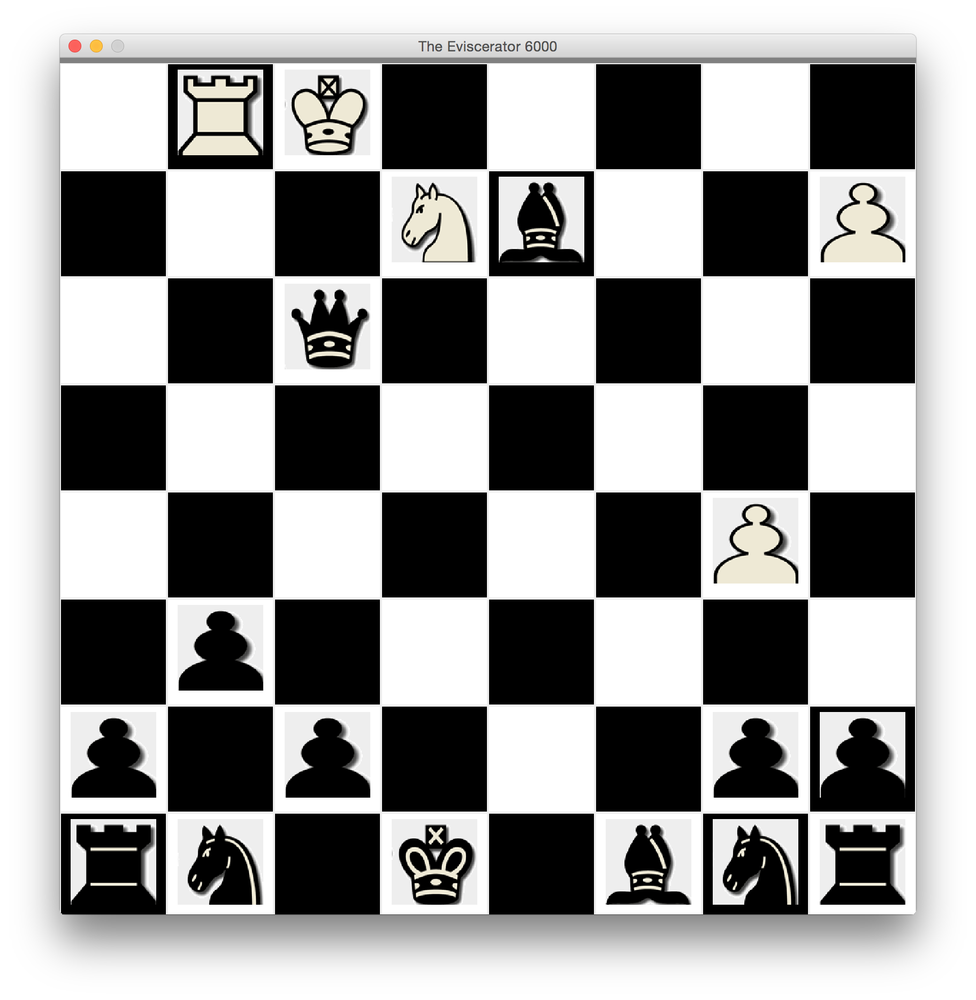
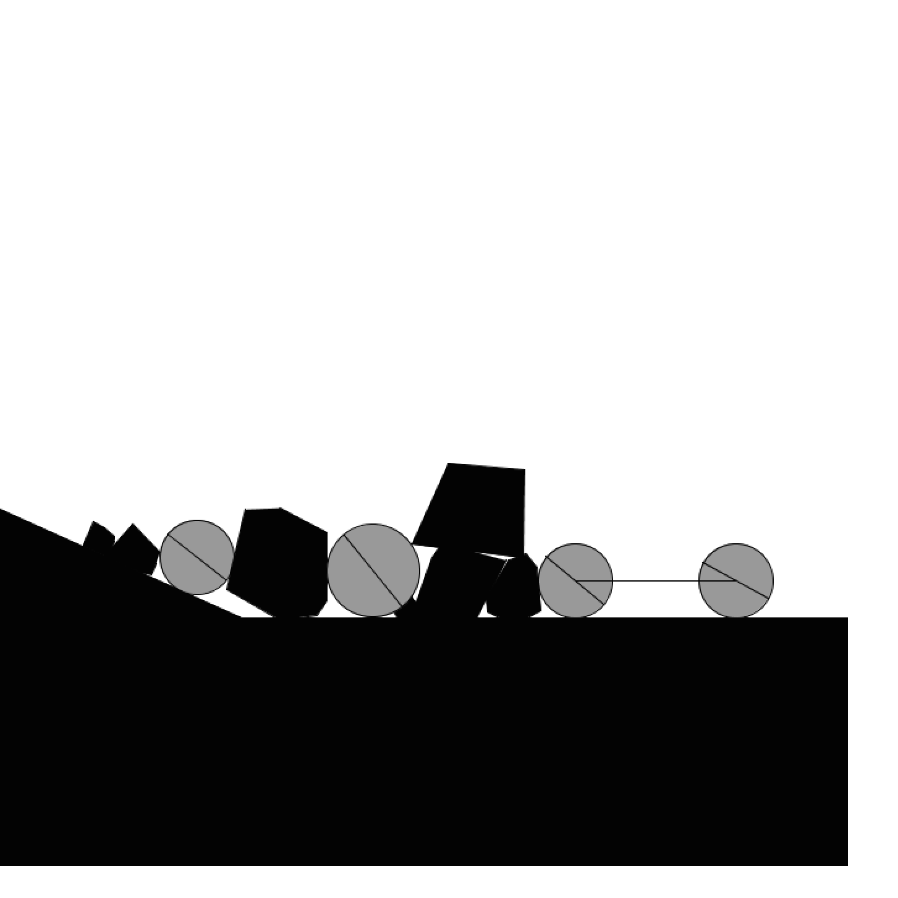
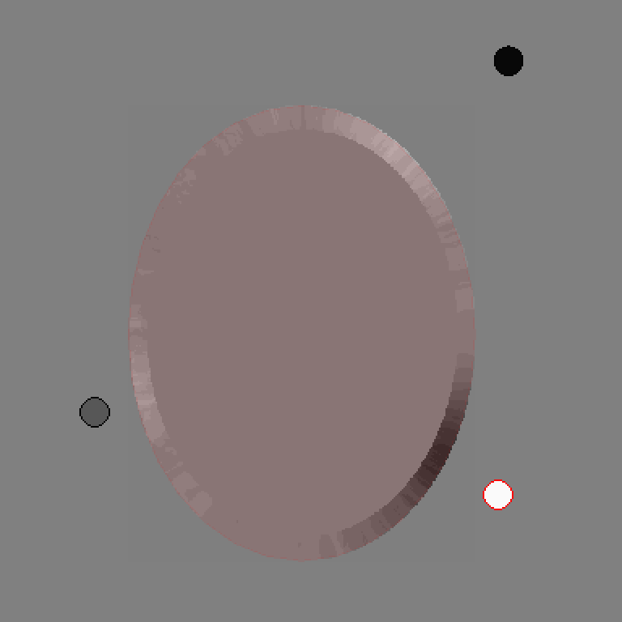
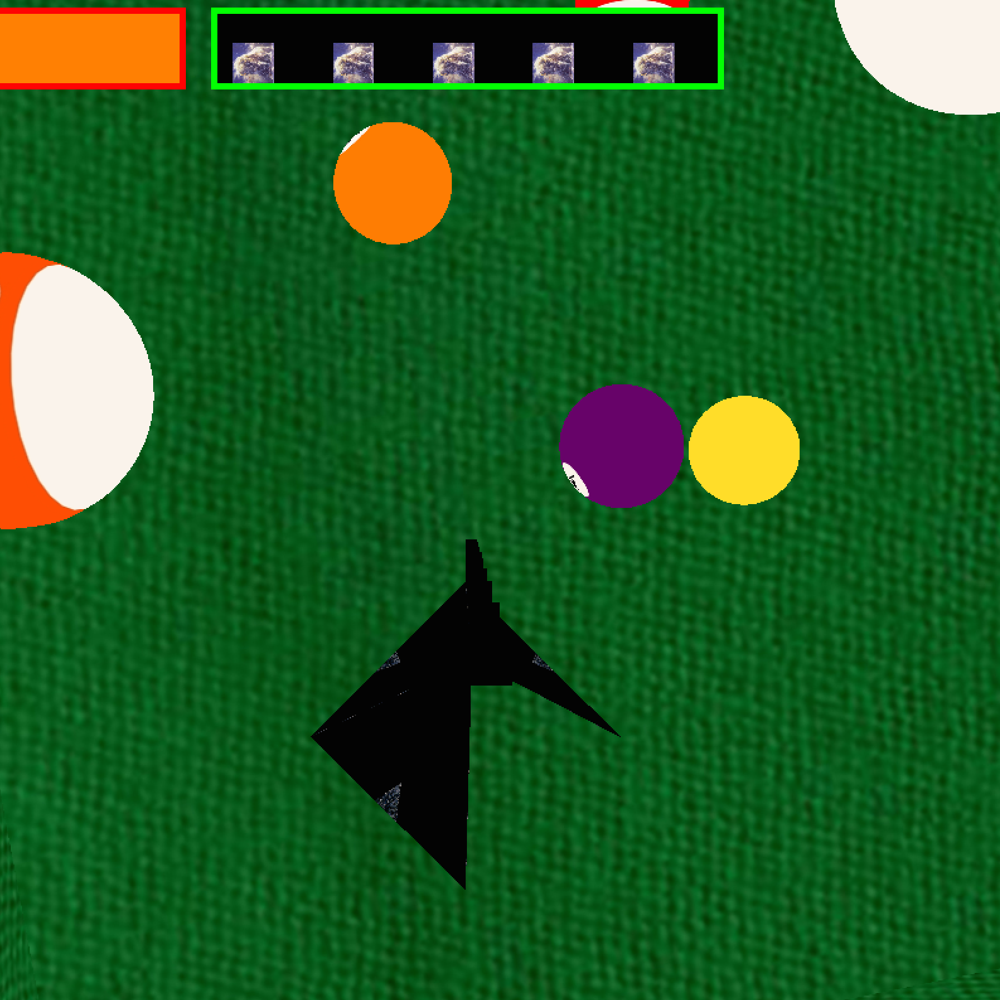
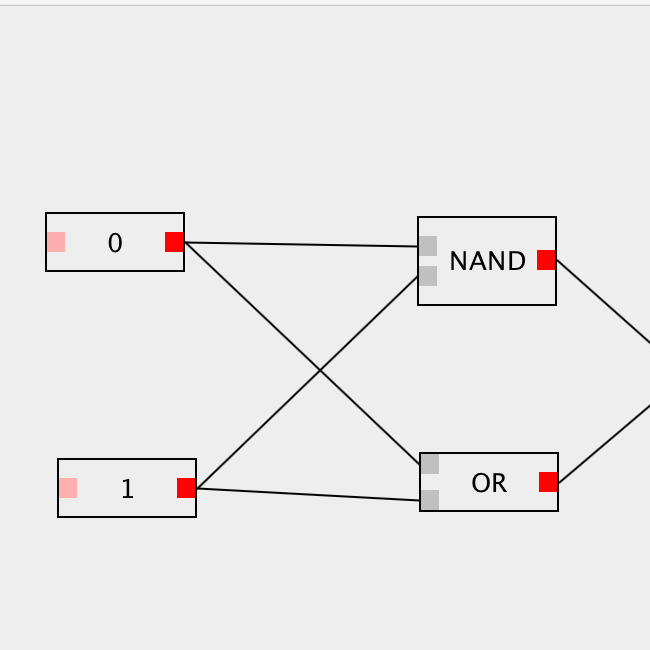
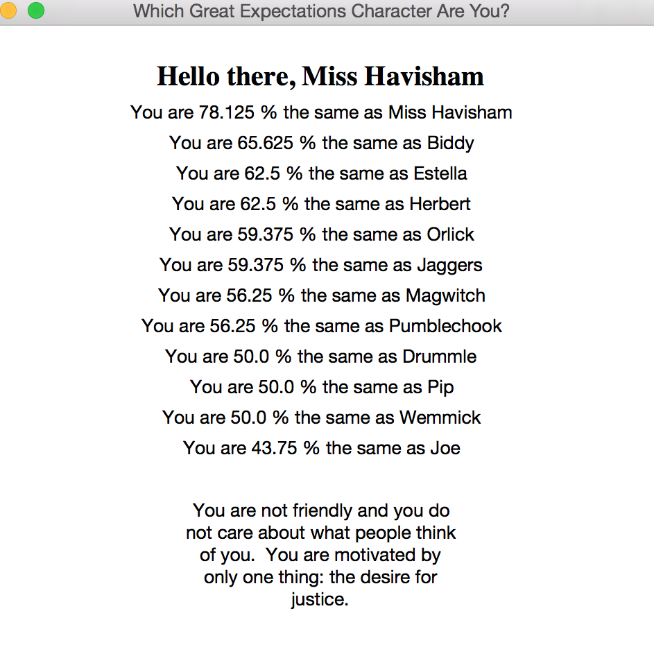
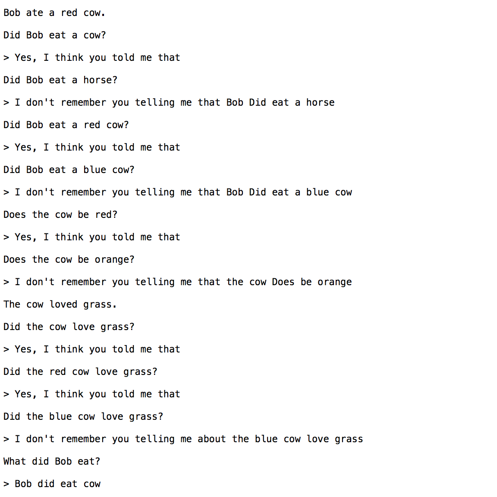
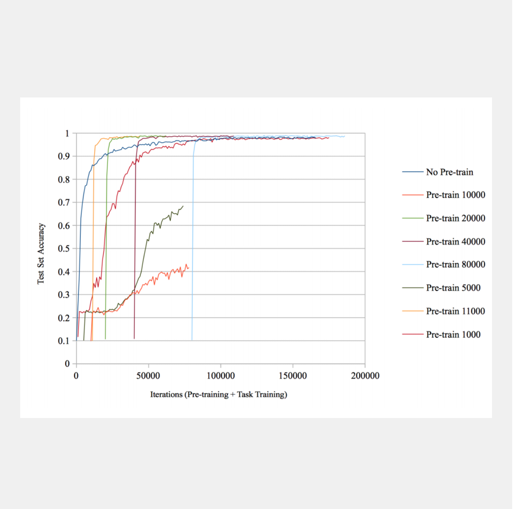
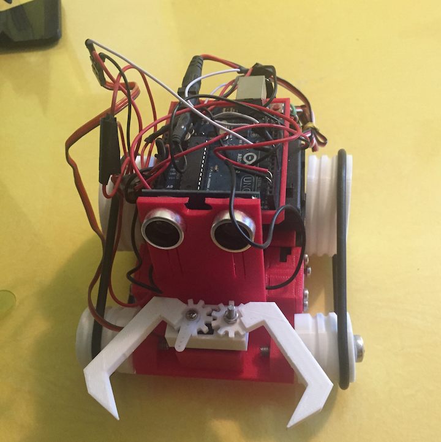

Publications
S. Lippl & J. Lindsey (2023). Implicit regularization of multi-task learning and finetuning] Implicit regularization of multi-task learning and finetuning in overparameterized neural networks. ICML 2023 workshop on High Dimensional Learning Dynamics. Link
J. Lindsey & E.B. Issa (2023). Factorized visual representations in the primate visual system and deep neural networks. bioRxiv. Link
J. Lindsey & A. Litwin-Kumar. (2022). Theory of systems memory consolidation via recall-gated plasticity. bioRxiv. Link
J. Lindsey & A. Litwin-Kumar (2022). Action-modulated midbrain dopamine activity arises from distributed control policies. NeurIPS proceedings. Link
K. G. Mizes, J. Lindsey, G. S. Escola, & B. P. Ölveczky (2022). Dissociating the contributions of sensorimotor striatum to automatic and visually-guided motor sequences. bioRxiv. Link
J. Lindsey & J. B. Aimone (2022). Sequence Learning and Consolidation on Loihi using On-chip Plasticity. In Neuro-Inspired Computational Elements Conference (pp. 70-72). Link
Mizes, K. G., Lindsey, J., Escola, G. S., & Ölveczky, B. P. (2022). Similar striatal activity exerts different control over automatic and flexible motor sequences. bioRxiv. Link
G. Chen, B. Kang, J. Lindsey, S. Druckmann,, & N. Li. (2021). Modularity and robustness of frontal cortical networks. Cell, 184(14), 3717-3730. "Modularity and robustness of frontal cortical networks." Cell 184.14: 3717-3730. Link
F. Li, J. Lindsey, E. C. Marin, N. Otto, M. Dreher, G. Dempsey, I. Stark, A. S. Bates, M. W. Pleijzier, P. Schlegel, A. Nern, S. Takemura, N. Eckstein, T. Yang, A. Francis, A. Braun, R. Parekh, M. Costa, L. K. Scheffer, Y. Aso, G. S. X. E. Jefferis, L. F. Abbott, A. Litwin-Kumar, S. Waddell & G. M. Rubin (2020). The connectome of the adult Drosophila mushroom body provides insights into function. eLife 9: e62576. Link
J. Lindsey & A. Litwin-Kumar (2020). Learning to Learn with Feedback and Local Plasticity. NeurIPS proceedings. Link
J. Lindsey, S. Ocko, S. Ganguli, & S. Deny (2019). A Unified Theory of Early Visual Representations from Retina to Cortex through Anatomically Constrained Deep CNNs. ICLR proceedings (oral presentation). Link
S. Ocko, J. Lindsey, S. Ganguli, & S. Deny (2018). The Emergence of Multiple Retinal Cell types through Efficient Coding of Natural Movies. NeurIPS proceedings. Link
M. Jain & J. Lindsey (2018). A Neural Network Model of Complementary Learning Systems. CogSci 2018 proceedings (oral presentation). Link
M. Jain & J. Lindsey (2018). Semiparametric Reinforcement Learning. ICLR, Workshop Track. Link
J. Lindsey (2017). Pre-Training Attention Mechanisms. NeurIPS 2017 Workshop on Cognitively Informed Artificial Intelligence. Link
Computer Chess

A computer chess player. The difficulty can be adjusted by setting the time the computer takes for each move. Uses standard techniques for chess AIs (e.g. minimax algorithm with pruning, piece-square tables, etc.) and has been optimized through a repeated genetic algorithm simulation. Rough sense of its playing level: it beats me most games, but I know people who can beat it most games.
2D Physics Engine

A 2D physics simulation program written in Java. Supports collisions between convex polygons and circles, remote attractive/repulsive forces (e.g. universal gravitation), "Earth-style" downward gravitation, springs (damped and simple), and friction. Comes with 6 preconfigured demos of the engine's various capabilities.
Conductors Simulation

Simulates the flow of charges within a conductor. Users can set the charge of the conductor, adjust its shape, and subject it to electric fields produced by external charges. Users can also toggle between viewing the charges particles within the conductor and viewing the charge density along its surface. Can be used to demonstrate various concepts in electromagnetism, including Faraday cages and the fact that charge tends to accumulate at sharp points.
3D Combat Billiards

A multiplayer 3D flying/combat game written in java. Graphics courtesy of LWJGL. Can be played by computers connected to the same network. Incorporates a simple 3D physics engine, multi-thread programming on the client side, some basic networking, and quaternion-based flight mechanics.
Logic Circuits

A GUI application that enables logic circuit simulation. By default, supports 'and,' 'or,' and 'not' gates. Allows user-defined gates to be saved and loaded as "black boxes," which enables arbitrarily complex simulations. Entire circuits can also be saved to and loaded from a file.
Great Expectations Quiz

My first ever programming project (from back in 9th grade)! A program that presents the user with a series of scenarios and then purports to tell him/her which character from Great Expectations he/she most closely resembles. Warning: the program is more frank than it is accurate. Be prepared to have your feelings hurt.
Chat Bot

A limited and unfinished/unpolished experiment with natural language processing, powered by OpenNLP and WordNet. It can process simple statements (e.g. "Helen likes big dogs") and then respond to some simple, related questions (e.g. "What does Jim like?"). Warning: only understands stilted (and sometimes incorrect) grammar!
InfoSnap Automated Tests
Proprietary automated testing software developed for InfoSnap, a company that facilitates the process of registration and enrollment management for schools. Used a Python scripts, Selenium, and SauceLabs to automatically test updates to InfoSnap's web forms on all major browser/OS combinations.
Recurrent Attention Model

Performs image classification by sequentially selecting and processing small "glimpse" windows from the image. Attention mechanism is non-differentiable and thus must be trained using reinforcement learning -- specifically, the REINFORCE algorithm. Based on the architecture described in "Recurrent Models of Visual Attention" (Mnih et al., 2014). Model implemented in TensorFlow.
Semantic Cognition
Trains a feedforward network to answer questions about whether certain subjects (e.g. "canary") have certain properties (e.g. "can fly"). After this training, performs hierarchical clustering on the subjects based on their similarity in network's feature space, revealing the formation of abstract categorizations. Written in MATLAB, from scratch. Based on the model described in "The Parallel Distributed Processing Approach to Semantic Cognition" (McClelland and Rogers, 2003).
Continuous Q Learning
General-purpose algorithm for reinforcement learning in environments with continuous action spaces. Compatible with the MuJoCo environments in the OpenAI Gym. Based on the "Normalized Advantage Functions" algorithm", described in "Continuous Deep Q-Learning with Model-based Acceleration" (Gu et al., 2016).
Pre-training Attention Mechanisms

Presented at the NIPS 2017 Workshop on Cognitively Informed Artificial Intelligence. Recurrent neural networks with differentiable attention mechanisms have had success in generative and classification tasks. We show that the classification performance of such models can be enhanced by guiding a randomly initialized model to attend to salient regions of the input in early training iterations. We further show that, if explicit heuristics for guidance are unavailable, a model that is pretrained on an unsupervised reconstruction task can discover good attention policies without supervision. We demonstrate that increased efficiency of the attention mechanism itself contributes to these performance improvements. Based on these insights, we introduce bootstrapped glimpse mimicking, a simple, theoretically task-general method of more effectively training attention models. Our work draws inspiration from and parallels results on human learning of attention.
Pre-training Attention Mechanisms
Recurrent neural networks with differentiable attention mechanisms have had success in generative and classification tasks. We show that the classification performance of such models can be enhanced by guiding a randomly initialized model to attend to salient regions of the input in early training iterations. We further show that, if explicit heuristics for guidance are unavailable, a model that is pretrained on an unsupervised reconstruction task can discover good attention policies without supervision. We demonstrate that increased efficiency of the attention mechanism itself contributes to these performance improvements. Based on these insights, we introduce bootstrapped glimpse mimicking, a simple, theoretically task-general method of more effectively training attention models. Our work draws inspiration from and parallels results on human learning of attention.
Models of the Retina
Analysis of the computational constraints that give rise to the distinctive receptive field patterns in the retina. In progress.
3D Printed Rover Bot

A 3D printed robot created using the MakerBot printer. Contains an ultrasonic sensor on the front that allows it to detect nearby objects. I've programmed it to find the nearest object, approach it, and snap menacingly with its claws. See it in action here.